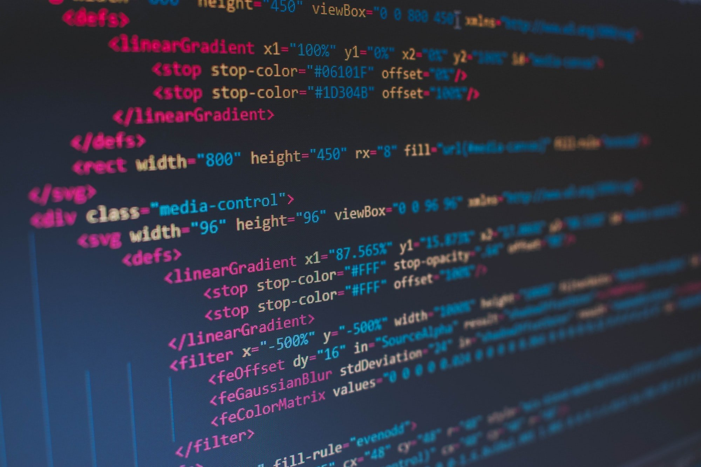

Pentru a adauga intr-o pagina continut audio, vom folosi tag-ul
<audio> cu atributul " controls".
In interiorul tag-ului notam sursa "source src", iar ca "type" selectam
varianta "audio/mp3" sau "audio/ogg".
Pentru a adauga un video, folosim tag-ul <video> cu atributul
"controls".
In interiorul tag-ului notam sursa videoclipului cu "source src", iar ca
"type"selectam varianta "video/mp4".
Pentru a insera imagini, folosim tagul
<img>. Vom folosi comanda "src"
pentru a adauga sursa imaginii.
